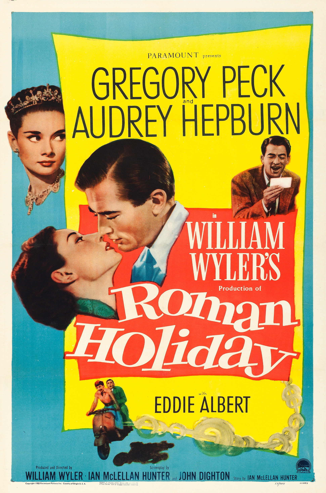

Roman Holiday
26th Academy Awards
(Oscars 1954)
10 Nominations, 3 Awards
| Nominations | ||
|---|---|---|
| Category | Nominees | Result |
| Best Motion Picture | William Wyler | Nominated |
| Actress | Audrey Hepburn | Won |
| Actor in a Supporting Role | Eddie Albert | Nominated |
| Directing | William Wyler | Nominated |
| Writing (Motion Picture Story) | Dalton Trumbo | Won |
| Writing (Screenplay) | Ian McLellan Hunter and John Dighton | Nominated |
| Cinematography (Black-and-White) | Frank Planer and Henri Alekan | Nominated |
| Film Editing | Robert Swink | Nominated |
| Art Direction (Black-and-White) | Hal Pereira and Walter Tyler | Nominated |
| Costume Design (Black-and-White) | Edith Head | Won |